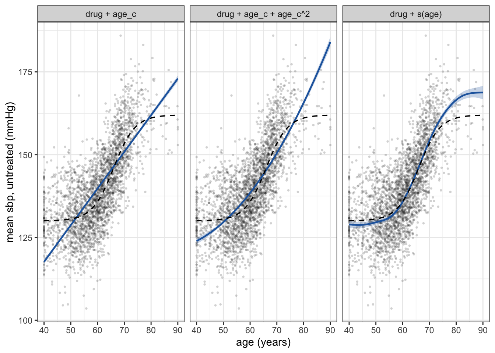
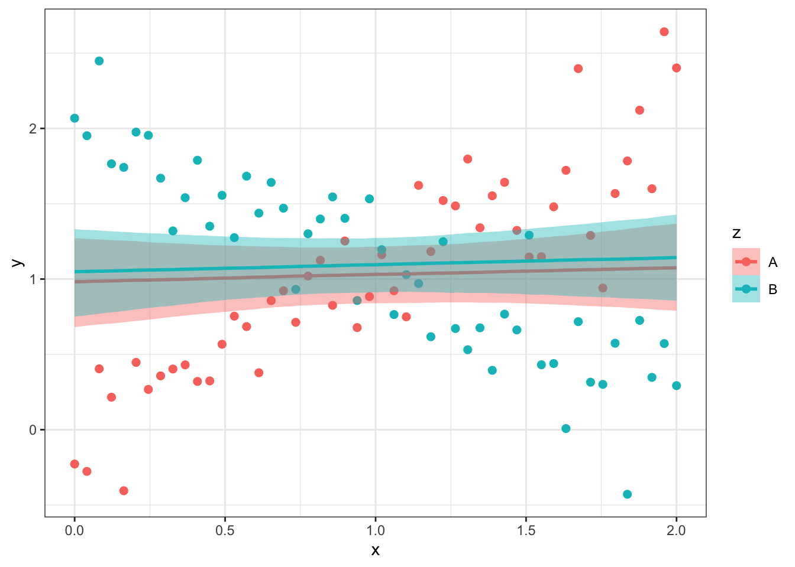
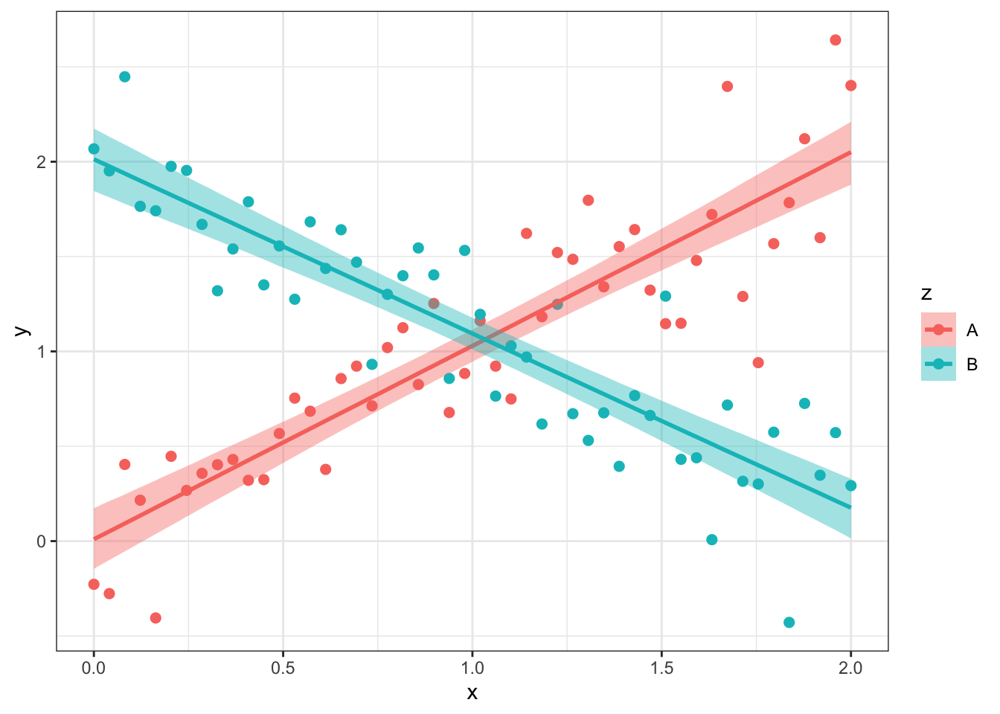
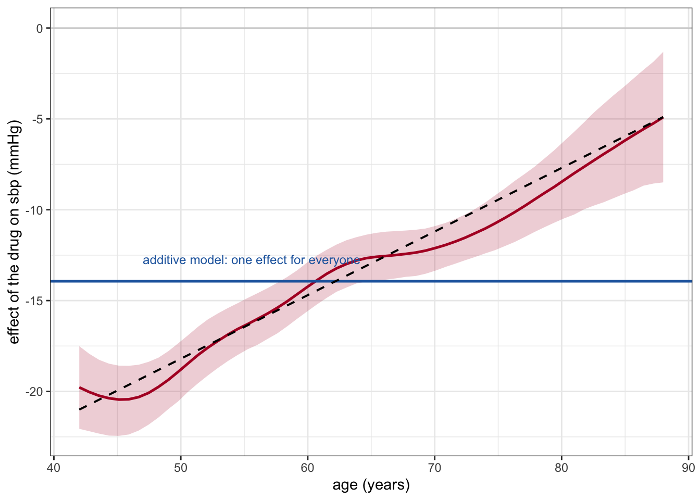
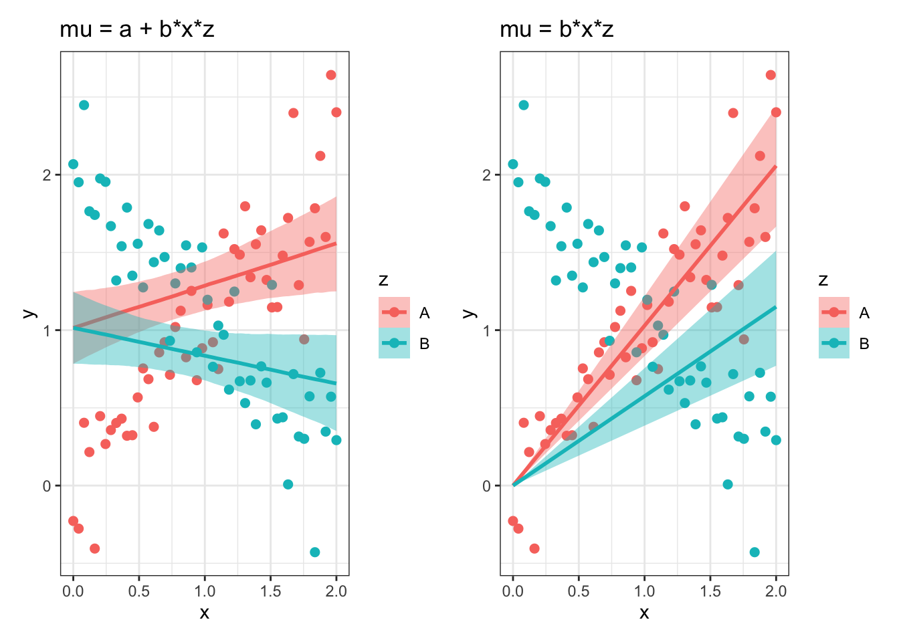

24 Curves and interaction
Chapter 22 used the shape of one covariate to demonstrate a workflow. This chapter takes the two structural choices that workflow was arbitrating between and treats them on their own terms.
The first is curvature. Nothing requires a predictor to contribute a straight line, and when a confounder’s shape is mis-modelled the consequence is not a cosmetic lack of fit but residual confounding in the treatment effect. Polynomials are the obvious remedy and the wrong one; splines are the right one, and in brms their wiggliness is estimated rather than chosen.
The second is interaction. The additive structure \(\mu_i = \alpha + \beta_1 x_{i1} + \beta_2 x_{i2} + \dots + \beta_K x_{iK}\) asserts that each predictor’s effect is the same at every value of the others. That is a substantive claim about the world, not a neutral default, and a product term \(\beta_{int} x_1 x_2\) is what removes it. Because effects are reported as marginal contrasts, an interacted model still yields a single number, so interpretability is no argument for leaving the assumption in place.
Both continue with the second study of Chapter 22, whose data generating process is in R/simulate_study2.R. The average causal effect there is -13.89 mmHg.
24.1 Curves in the process model
Nothing in the linear model requires a predictor to enter as itself. As the footnote in Chapter 20 records, “linear” constrains how the coefficients enter, not the predictors, so \(x^2\), \(\log x\) and a spline basis are all admissible and all keep the model linear. What changes is which shapes of relation the model can represent.
24.1.1 Polynomials
The obvious flexible term is a polynomial: add \(x^2\), then \(x^3\), and so on. It works, and it has two well-known faults. Its basis is global: each coefficient multiplies a function that is non-zero over the whole range, so the data at one end of the age range influence the fitted curve at the other. And its behaviour outside, and near the edges of, the observed range is poor, with high-degree polynomials swinging violently near the boundaries. Raw powers are also strongly correlated with each other, which makes the posterior badly conditioned; centring the predictor, or using orthogonal polynomials, helps with the conditioning but not with the global support.
For the second study the quadratic in the table above is a real improvement over the line – it recovers most of the missing effect – and it is still 0.47 mmHg from the truth, because a parabola cannot be flat at both ends and steep in the middle.
24.1.2 Splines
A spline replaces the global basis with a local one. The range of the predictor is divided at a set of knots, a low-degree polynomial is fitted within each interval, and the pieces are joined so that the result is smooth. Each basis function is non-zero only near its own knot, so the fit at age 45 is determined by the patients near 45.
Flexibility then has to be controlled, and this is where the Bayesian reading is the natural one. A penalised spline attaches a penalty to the curve’s wiggliness, with a smoothing parameter \(\lambda\) setting how hard the penalty bites: as \(\lambda \to \infty\) the fitted curve becomes a straight line, and as \(\lambda \to 0\) it interpolates the data. In a frequentist GAM \(\lambda\) is chosen by cross-validation or REML. In brms, s(age) puts the same basis in the model and treats the wiggliness penalty as a prior variance on the spline coefficients, estimated jointly with everything else: the parameter called sds(sage_1) in the model summary is that scale, and the smooth’s effective degrees of freedom follow from its posterior. Regularisation and prior are the same object here, which is why a penalised spline needs no extra machinery in a Bayesian fit.
The technical material – how the bases are constructed, what a thin-plate spline is, how tensor products handle two smooth predictors at once, and how the effective degrees of freedom are counted – is in the mgcv appendix, which works in mgcv directly. Everything in this chapter is fitted with brms, which accepts s() and t2() terms and estimates their smoothing parameters as part of the posterior. For a single continuous predictor the brms default (a thin-plate spline with a basis dimension of 10) is almost always enough; the basis dimension is an upper bound on flexibility, not a target, because the penalty decides how much of it is used.
24.1.3 Why age gets a spline
The general case for a spline is the argument above about local support. The case for giving age one, in nearly every epidemiological model, is more specific and worth stating as a rule.
The age relation is usually not linear over the range a cohort spans. Blood pressure is a good illustration, because the same cohort shows both behaviours at once. In the Framingham data, systolic pressure rises roughly linearly from age 30 to 84, but diastolic pressure rises and then falls after age 50 to 60, pulse pressure climbs steeply from that point, and mean arterial pressure reaches an asymptote.1 Three of those four quantities cannot be described by a straight line in age, and which one an analysis happens to use as outcome or confounder is not usually chosen with the shape in mind. A linear age term is a claim about the shape, and the claim is often false.
Age is usually a confounder, and mis-modelling a confounder leaves residual confounding. This is the practical point. Adjustment removes the part of the confounding that the model’s functional form can represent, and leaves the rest. The demonstration is in the table above: the estimate with a linear age term is -12.06 mmHg, with a spline -13.93, against a truth of -13.89. Nothing was omitted from the model. Age was in it. The bias came from the shape. The mechanism is that what a straight line cannot represent stays in the residual, and the residual is correlated with treatment whenever treatment prevalence varies over the same range in which the line’s error varies – which is what an age-keyed prescribing rule guarantees.
The cost is a coefficient you cannot interpret, which costs nothing. A spline has no single slope, so there is no “effect of age per year” to report. Under this book’s convention that is not a loss: effects are reported as contrasts of model predictions, and a contrast in age – the difference in expected outcome between age 60 and age 70, say – is available from the fitted smooth with
avg_comparisons()whenever it is wanted. What you give up is a number that was, in the linear model, an artefact of a shape assumption.Categorising age is not an adequate substitute. Ten-year bands leave the within-band variation unadjusted, which is residual confounding of the same kind and often of similar size, and they throw away information that the spline uses. If a categorical age variable is used for presentation, adjust with the spline and present the categories.
The same argument applies to any continuous confounder measured over a wide range: calendar time, baseline blood pressure, body mass index, dose.
24.2 Interaction
The additive structure specifies parallel slopes. To see what this means, let’s simulate some data. We have a categorical variable z with 2 levels, “A” and “B”, denoting experimental conditions A and B. We have an x-variable (akin to a time variable), which covers the range 0 to 2 with 50 equally spaced points. And we have a continuous measurement variable y, which in experiment “A” goes up as x increases and in experiment B goes down at the same rate.
Show code
set.seed(1701)
xg <- seq(0, 2, length.out = 50) # the x-variable: 50 equally spaced points, 0 to 2
# condition A: intercept 0, slope +1, both with normal noise
yA <- (0 + rnorm(50, 0, 0.2)) + (1 + rnorm(50, 0, 0.2)) * xg
# condition B: intercept 2, slope -1
yB <- (2 + rnorm(50, 0, 0.2)) + (-1 + rnorm(50, 0, 0.2)) * xg
dfx <- tibble(z = rep(c("A", "B"), each = 50),
x = rep(xg, 2),
y = c(yA, yB))The two conditions cross in the middle of the x range, so their mean y values are nearly the same – 1.03 in A and 1.09 in B – while their slopes are opposite in sign. Any model that can only report a difference in means will therefore report that nothing is happening.
What happens if we model these data with the additive equation \(\mu_i = \alpha + \beta_1 x_i + \beta_2 z_i\)?

This model fails to capture the simulated data. The additive structure restricts the A and B slopes to be parallel, and the best a pair of parallel lines can do with crossing data is to run through the middle of both. The fitted x-slope is 0.048 and the fitted deflection for z = B is 0.066: both are close to zero, so the model concludes that x does nothing and that the two conditions lead to nearly identical outcomes. Neither conclusion is true of the data in Figure 24.2.
The fix is an interaction term, which is a multiplication term:
\[\mu_i = \alpha + \beta_1 x_i + \beta_2 z_i + \beta_3 x_i z_i\]

Now the fit recovers the simulated structure (Figure 24.3). The generating values were intercept 0, deflection for z = B of 2, x-slope 1, and a change in slope for B of -2, i.e. \(\mu_i = 0 + 1 x_i + 2 z_i - 2 x_i z_i\). The fitted coefficients, to two decimals, are 0.01, 1.02, 2, and -1.94 – each within a couple of tenths of the truth, which is as close as 100 noisy points allow. In particular \(\beta_3\) is the change in the x-slope when z moves from A to B, not a change in intercept.
Show code
posterior_summary(m_sim_interaction)[c("b_Intercept", "b_x", "b_zB", "b_x:zB", "sigma"), ] Estimate Est.Error Q2.5 Q97.5
b_Intercept 0.01151922 0.08296102 -0.1458330 0.1729027
b_x 1.01821027 0.07183379 0.8793600 1.1553791
b_zB 2.00126568 0.11474378 1.7721426 2.2238961
b_x:zB -1.93728666 0.09935605 -2.1294366 -1.7442851
sigma 0.29767665 0.02123553 0.2592106 0.3423138If z is continuous rather than two-level, the interaction model still works, and gives a separate x-slope for every z value and, conversely, a separate z-slope for each x value.2 The model expects the relationship between x and y – how much a unit increase in x changes the predicted mean y – to depend on the value of z, and symmetrically expects the relationship between z and y to depend on the value of x. This symmetry is worth dwelling on: the model neither knows nor cares which of x and z is of main interest to you, or which of them (if either) causally affects y. That asymmetry has to come from you and from the DAG, not from the fit; Chapter 16 separates statistical interaction from effect modification on this point. What the model does assume is that \(\sigma\), the sd of y around its predicted mean, is the same at every combination of x and z (it makes no assumptions about the variability of the predictors themselves, which it conditions on). And, with the flat default priors used here, it applies no shrinkage to the interaction coefficient – Chapter 27 is about what changes when it does.
24.2.1 An interaction, and the effect it hides
Return to the second study, where the drug’s effect varies with age. The comparison of interest is between the additive spline model and the one that lets the effect vary, s(age, by = drug). Their marginal estimates are close:
| model | average effect (mmHg) | lower 95% | upper 95% |
|---|---|---|---|
| drug + s(age) | -13.93 | -14.54 | -13.33 |
| drug + s(age, by = drug) | -14.02 | -14.64 | -13.41 |
| the truth | -13.89 |
Their statements about individual patients are not.
Show code
comparisons(m2_spby, variables = "drug",
newdata = datagrid(age = c(45, 55, 65, 75, 85)))
age Estimate 2.5 % 97.5 %
45 -20.44 -22.44 -18.57
55 -16.38 -17.79 -14.96
65 -12.63 -13.91 -11.32
75 -10.66 -12.15 -9.09
85 -6.19 -9.11 -3.17
Term: drug
Type: response
Comparison: 1 - 0
The additive model is not merely less informative here. It reports, with a narrow interval, that the drug lowers pressure by about 13.9 mmHg in a 45-year-old, when the truth is 20, and by the same amount in an 85-year-old, when the truth is under 6. A clinician deciding whom to treat is given a number that is wrong for both ends of the age range, and nothing in the additive fit indicates it.
There is a second, subtler consequence. The single slope of an additive model is not an estimate of the population-average effect. It is a variance-weighted average of the age-specific effects, weighted by \(p(a)\{1 - p(a)\}\), the conditional variance of treatment at each age – so patients in age ranges where treatment is close to 50/50 count for more than those in ranges where almost everyone, or almost nobody, is treated. In this study that weighted average is -13.56 mmHg against a population average of -13.89: a gap of 0.33 mmHg, which is about the size of the estimate’s own posterior sd (0.31 mmHg) and so is not detectable in a study of this size. Under randomisation the weights are constant and the gap disappears; the more treatment prevalence depends on the modifier, and the more the effect varies across it, the larger it becomes. The interaction model has no such problem, because the estimand is formed by averaging predicted contrasts over the population rather than by reading a slope.
24.2.2 When to include an interaction, and when not
The practical position of this book is that in a causal analysis an interaction between the treatment and a covariate is the default, and its omission is the choice that needs defending. There are four reasons for it.
An additive model asserts homogeneity of effect; an interaction model estimates it. “No interaction” is not a neutral starting point. It is the claim that the treatment does the same thing to a 45-year-old as to an 85-year-old, which is a claim about biology and about the population, of the kind that would need argument if it were stated in words. It is rarely stated in words, because leaving a term out of a formula does not feel like an assertion. And yet, it is one.
Interpretability is not a reason to omit interactions. The usual objection to interactions is that they turn one effect into many and leave nothing to report. That objection has force only if effects are read off coefficients. Under the convention used throughout this book they are not: the reported effect is a contrast of predictions from the fitted model, averaged over the population, and an interacted model yields that single number just as an additive model does – in the table above the two average estimates differ by 0.08 mmHg. What the interacted model adds is the ability to also report the effect at any covariate value, with its own uncertainty. There is no trade-off between having one number and having many.
A fully interacted model is closer to what standardisation does. Letting treatment interact with every covariate is equivalent to fitting the outcome model separately in the treated and the untreated and then standardising both to the same population. That is g-computation with no cross-arm structure imposed, and it is what the capstone of Chapter 28 does. An additive model borrows the covariate-effect structure from one arm to the other, which is an efficiency gain paid for with an assumption.
The cost is precision, and it is usually modest. An interaction is estimated from a difference of slopes, which needs more data than a main effect, and the marginal effect from an interacted model usually has a wider interval: in the table above the 95% interval widens from 1.21 to 1.23 mmHg. When the covariate has many levels, or the cells are thin, the cost is much larger, and then the decision is a real one.
The cases for not including interactions:
The cells are genuinely empty. With a rare covariate value and few events, an unshrunk interaction is estimated from almost nothing and the model becomes unstable. The right response is usually not omission but shrinkage: put a weakly informative prior on the interaction coefficients, centred at zero with a scale set by what a plausible degree of modification looks like, so the data can move the term but noise cannot. Omitting the term is the special case of a prior that is a point mass at zero, and there is rarely a reason to be that certain. Where the modifier has many levels, the natural version of this is hierarchical – varying slopes with a shared scale, described in Chapter 27.
The covariate is a nuisance and the estimand is marginal. If a covariate is in the model only to block a back-door path or to reduce \(\sigma\), and the question is the population-average effect, an additive term is often adequate. Say so as a decision, and check it: compare with the interacted model on
loo(a comparison within a fixed adjustment set, which is whatloois for) and, more importantly, compare the marginal estimates. If they agree, the additive model is a defensible simplification.Interaction is not the question and the interval matters more than the detail. A legitimate choice, provided the homogeneity assumption is stated where the model is described.
That is not a reason:
- “The interaction term was not statistically significant.” A product term with an interval overlapping zero is weak evidence of homogeneity, especially at the sample sizes at which subgroup effects are typically estimated, and it is evidence about interaction on the scale the model happens to use. As Chapter 16 shows, a null interaction on the multiplicative scale is compatible with a large one on the additive scale, and it is usually the additive scale that decisions turn on. Deciding homogeneity from a non-significant product term combines a weak test with the wrong scale.
Interaction terms without their main effects
A product term is a statement about how a slope changes, so it is interpretable only alongside the terms whose slope it modifies. Dropping those does not simplify the model; it fits a different and usually incoherent one.

With one shared intercept (left panel) the fitted intercept is 1.01, near the grand mean of y (1.06), and the slopes are 0.27 for A and -0.18 for B, both far from the generating values of +1 and -1: a line that must pass through a shared intercept cannot also match its own group. With the intercept removed as well (right panel) the slopes are 1.03 and 0.58, and the sign of the B relation has reversed.
The rule that follows is mechanical: include an interaction with all of its lower-order terms, and read the product coefficient as a modification of them. It is a default rather than a law, and the next section states the condition under which it can be broken.
For the spline analogue the rule needs a qualification, because s(age, by = drug) constructs two different terms depending on how drug is coded, and only one of them behaves like a product term.
When drug is a factor, as it is here, the term fits a separate age curve for each arm. Each of those curves is centred – constrained to sum to zero over the data – so neither can carry the difference in level between the arms, and the parametric drug term is required to supply it. A separate s(age) must not be added: the arm-specific curves already provide both age relations, and s(age) would be a third curve competing with them for the same signal. This is the form the model above uses, and the form the mgcv appendix treats as standard.
When drug is a numeric 0/1 indicator, the term is instead a single curve multiplied by drug – a varying coefficient – and it is not centred. Now s(age) is required, because without it the untreated arm has no age relation at all, and the estimate is badly biased as a result. But the parametric drug term becomes redundant: drug times the constant part of the curve is already inside the term’s unpenalised component, so adding drug separately makes the design rank-deficient. mgcv reports this and drops the coefficient; brms leaves both in, identified only by their prior and only as a sum. Nothing that is reported as a marginal contrast is harmed by it, but the drug coefficient then means nothing on its own.
24.3 When to omit a main effect
Is it ever defensible for an interaction model to omit a main effect? Writing \(X_1\) and \(X_2\) for the main effects and \(X_1{:}X_2\) for the interaction, the formulas at issue are
y ~ x1 + x1:x2 # interaction present, but no main effect for x2
y ~ 0 + x1:x2 # interaction only: no intercept, no main effectsThe answer is sometimes, under specific conditions. Two questions settle it, and they have to be asked in that order.
Is anything being omitted at all by omiting main effects? For factors the answer is often no. R recodes a factor to fill the gap left by a missing lower-order term, so a formula that looks non-hierarchical can produce the same design matrix, the same fit and the same predictions as the saturated model. Nothing has been dropped and there is nothing to defend.
If something is being omitted, is zero a state of the world or a convention? A model y ~ x1 + x1:x2 lacking \(x_2\) as a main effect asserts that \(x_2\) has no effect on the outcome at \(x_1 = 0\). That is a substantive claim when \(x_1 = 0\) means unexposed, and an artefact of the measurement scale when it means 0 °C.
Question 1 is about the algebra of model matrices and is settled by inspection. Question 2 is about biology and is settled by argument. This section takes them in that order, and then works through the situations in epidemiology in which the answer comes out in favour of the reduced model.
24.3.1 The invariance argument
Dropping the main effect of \(X_2\) does not say “\(X_2\) does not matter.” It says: the effect of \(X_2\) on \(Y\) is zero at \(X_1 = 0\).
Here is why. Start from the full model, in which the lower-order terms make the fit indifferent to where the predictors’ origins are placed.
\[E[Y] = \beta_0 + \beta_1 X_1 + \beta_2 X_2 + \beta_3 X_1 X_2\]
Recentre \(X_1\) by substituting \(X_1 = X_1^* + a\) and collecting terms:
\[E[Y] = (\beta_0 + a\beta_1) + \beta_1 X_1^* + (\beta_2 + a\beta_3) X_2 + \beta_3 X_1^* X_2\]
The coefficient on \(X_2\) is now \(\beta_2 + a\beta_3\). So the constraint \(\beta_2 = 0\) holds in one coordinate system and fails in every other one. The shift has been absorbed by the coefficient on \(X_2\), and \(\beta_3\) is unchanged. Recentring \(X_2\) is absorbed, symmetrically, by the coefficient on \(X_1\). The pairing is crossed: the main effect of \(X_2\) is what makes the model invariant to the origin of \(X_1\), and the main effect of \(X_1\) to the origin of \(X_2\).
A model containing \(X_1X_2\) but not \(X_2\) is therefore invariant to recentring \(X_2\) and not to recentring \(X_1\). It commits to the particular value \(X_1 = 0\), and it is defensible only if that value is a structural zero – a state the variable can actually be in, at which the claim being made is substantive – rather than a convention. Omitting both main effects requires both variables to have structural zeros; omitting the intercept as well requires the outcome to be zero when they both are. This is the general criterion, and it gives a check to set beside the rule: recentre the predictor and see whether the model’s claims move. If they move and the origin was arbitrary, the omission is an error. That is what goes wrong in Figure 24.5, where x is a simulated predictor whose zero means nothing.
The question “may I drop this main effect?” is therefore the question is \(X_1 = 0\) a real, observed value at which \(X_2\) demonstrably has no effect? Where it is not, converting a temperature from °C to Kelvin will change the interaction estimate and can reverse the conclusion. Nothing about the biology has changed; only the placement of zero. By contrast the full model, spanning \(\{1, X_1, X_2, X_1X_2\}\), is unchanged by shifting either variable. That is the formal content of Nelder’s marginality principle: keep the lower-order terms marginal to any interaction you include, because models that violate marginality are not invariant to location shifts of the predictors.
A model without the x2 main effect is not a reparameterisation. We simulate from a known truth and refit after moving the origin of x1. The true interaction coefficient is 0.05, and each fit is summarised by its interaction estimate and by its residual sum of squares.3
Show code
set.seed(42)
n <- 400
x1 <- rnorm(n, mean = 50, sd = 10) # think: age in years
x2 <- rnorm(n)
y <- 2 + 0.3 * x1 + 1.5 * x2 + 0.05 * x1 * x2 + rnorm(n, sd = 2)
d <- data.frame(y = y, x1 = x1, x2 = x2)
shift_demo <- function(k, dat) {
dat$z <- dat$x1 - k
m_full <- lm(y ~ z * x2, data = dat) # 1, z, x2, z:x2
m_red <- lm(y ~ z + z:x2, data = dat) # 1, z, z:x2 <- no x2 main effect
data.frame(
origin_of_x1 = paste0("x1 - ", k),
full_beta_int = coef(m_full)[["z:x2"]],
full_RSS = sum(residuals(m_full)^2),
red_beta_int = coef(m_red)[["z:x2"]],
red_RSS = sum(residuals(m_red)^2)
)
}
res <- do.call(rbind, lapply(c(0, 40, 50), shift_demo, dat = d))
knitr::kable(res, digits = 4,
caption = "Truth for the interaction coefficient is 0.05.")| origin_of_x1 | full_beta_int | full_RSS | red_beta_int | red_RSS |
|---|---|---|---|---|
| x1 - 0 | 0.0566 | 1770.97 | 0.0785 | 1791.633 |
| x1 - 40 | 0.0566 | 1770.97 | 0.2209 | 4173.593 |
| x1 - 50 | 0.0566 | 1770.97 | 0.0409 | 7851.597 |
Read the table column by column:
full_beta_intandfull_RSSare constant down the rows. Centring is a harmless reparameterisation. It changes what the main-effect coefficients mean, but not the fit, the predictions, or the interaction estimate.red_beta_intandred_RSSmove, substantially. The model without thex2main effect is not a reparameterisation. Each row is a different model with a different fit – and a different answer to the research question, driven by an arbitrary choice of where zero is placed.
The Celsius-to-Kelvin version of the same point, a shift of 273.15:
Show code
knitr::kable(do.call(rbind, lapply(c(0, -273.15), shift_demo, dat = d)),
digits = 4,
caption = "Same data, 'Celsius' vs 'Kelvin'. Look at red_beta_int.")| origin_of_x1 | full_beta_int | full_RSS | red_beta_int | red_RSS |
|---|---|---|---|---|
| x1 - 0 | 0.0566 | 1770.97 | 0.0785 | 1791.633 |
| x1 - -273.15 | 0.0566 | 1770.97 | 0.0123 | 1852.148 |
And the fully unmoored version, y ~ 0 + x1:x2, which forces the response surface through zero along both axes:
Show code
m_pure <- lm(y ~ 0 + x1:x2, data = d)
m_full <- lm(y ~ x1 * x2, data = d)
c(RSS_pure_interaction = sum(residuals(m_pure)^2),
RSS_full_model = sum(residuals(m_full)^2))RSS_pure_interaction RSS_full_model
119494.37 1770.97 The residual sum of squares is larger by a factor of 67.5. For two continuous predictors on a typical epidemiological outcome, this model is essentially never defensible.
24.3.2 The same syntax, three different meanings
Everything above assumed both predictors were continuous. As soon as one of them is a factor the same formula can mean something else entirely, and the reason is a single rule about how R builds design matrices:
A factor is coded with all of its levels inside an interaction term whenever the corresponding lower-order term is absent from the formula, and with one fewer level otherwise. A continuous predictor contributes one column and cannot be recoded.
That asymmetry generates everything below. Dropping the main effect of a factor usually changes nothing, because the factor’s coding expands to absorb it. Dropping the main effect of a continuous predictor always removes a column, and therefore always changes the model.
Show code
set.seed(1)
nz <- 200
dz <- data.frame(
yy = rnorm(nz),
f = factor(sample(c("A", "B"), nz, TRUE)), # a two-level factor
g = factor(sample(c("no", "yes"), nz, TRUE)), # a second two-level factor
x = rnorm(nz, 50, 10), # a continuous predictor
u = rnorm(nz, 50, 10)) # a second continuous predictor
forms <- c(~ f * x, ~ f + f:x, ~ x + f:x, ~ 0 + f:x,
~ f * g, ~ f + f:g, ~ 0 + f:g,
~ x * u, ~ x + x:u)
tibble(formula = c("f * x", "f + f:x", "x + f:x", "0 + f:x",
"f * g", "f + f:g", "0 + f:g",
"x * u", "x + x:u"),
columns = vapply(forms, function(fm)
paste(colnames(model.matrix(fm, dz)), collapse = ", "), character(1))) %>%
kbl(caption = "What R actually fits: f and g are two-level factors, x and u continuous.") %>%
kable_styling(full_width = FALSE)| formula | columns |
|---|---|
| f * x | (Intercept), fB, x, fB:x |
| f + f:x | (Intercept), fB, fA:x, fB:x |
| x + f:x | (Intercept), x, x:fB |
| 0 + f:x | fA:x, fB:x |
| f * g | (Intercept), fB, gyes, fB:gyes |
| f + f:g | (Intercept), fB, fA:gyes, fB:gyes |
| 0 + f:g | fA:gno, fB:gno, fA:gyes, fB:gyes |
| x * u | (Intercept), x, u, x:u |
| x + x:u | (Intercept), x, x:u |
Three rows carry the argument. f + f:x has the same four columns as f * x, differently parameterised, because dropping x licenses the full coding fA:x, fB:x. 0 + f:g has four columns, one per cell, and so does the saturated f * g. But x + x:u has three columns where x * u has four: a column has gone, and the invariance with it.
| \(x_1,x_2\) both continuous | \(x_1,x_2\) both factors | \(x_1\) factor, \(x_2\) continuous | |
|---|---|---|---|
y ~ x1 + x1:x2 |
restriction: one column fewer, origin-dependent | reparameterisation of the saturated model (the nesting idiom x1/x2) |
reparameterisation: a separate intercept and slope per level of \(x_1\) |
y ~ x2 + x1:x2 |
the same, with the roles swapped | the same, with the roles swapped | restriction: a common intercept, separate slopes |
y ~ 0 + x1:x2 |
almost never defensible | reparameterisation: cell means | lines through the origin; rarely defensible |
The top-left cell is where students get into trouble, and it is the case the invariance argument is about. The right-hand two columns are the subject of the next two subsections.
24.3.3 Factor × factor: cell-means coding
When both predictors are factors, dropping the “main effects” is not a restriction at all. A \(2 \times 2\) design has four cells, the saturated model has four parameters, and any four linearly independent functions of the four cell means parameterise the same fit. Cell-means coding chooses the four means themselves.
The example is an antihypertensive drug, chronic kidney disease as a candidate modifier, and change in systolic blood pressure as the outcome.
Show code
set.seed(7)
n2 <- 600
bp_drug <- factor(rbinom(n2, 1, 0.5), labels = c("no", "yes"))
ckd <- factor(rbinom(n2, 1, 0.4), labels = c("absent", "present"))
## change in SBP (mmHg): the drug lowers it, and lowers it further in CKD
dsbp <- -1 - 8 * (bp_drug == "yes") - 2 * (ckd == "present") -
12 * (bp_drug == "yes") * (ckd == "present") + rnorm(n2, sd = 6)
d2 <- data.frame(dsbp = dsbp, bp_drug = bp_drug, ckd = ckd)
m_sat <- lm(dsbp ~ bp_drug * ckd, data = d2) # saturated
m_cell <- lm(dsbp ~ 0 + interaction(bp_drug, ckd), data = d2) # one mean per cell
c(max_abs_fitted_difference = max(abs(fitted(m_sat) - fitted(m_cell))),
residual_df_saturated = df.residual(m_sat),
residual_df_cell_means = df.residual(m_cell))max_abs_fitted_difference residual_df_saturated residual_df_cell_means
1.592504e-12 5.960000e+02 5.960000e+02 Identical fitted values to machine precision, identical residual degrees of freedom. These are the same model in different coordinates, and that model is in turn the same as four separate models, one fitted within each combination of bp_drug and ckd. The difference is only in what the coefficients hand you directly:
Show code
knitr::kable(data.frame(estimate = coef(m_cell),
se = sqrt(diag(vcov(m_cell)))),
digits = 3, caption = "Stratum-specific means, read off directly.")| estimate | se | |
|---|---|---|
| interaction(bp_drug, ckd)no.absent | -0.841 | 0.419 |
| interaction(bp_drug, ckd)yes.absent | -9.057 | 0.444 |
| interaction(bp_drug, ckd)no.present | -3.646 | 0.542 |
| interaction(bp_drug, ckd)yes.present | -23.880 | 0.526 |
Because the fit is unchanged, nothing in the invariance argument applies here. There is no origin to be sensitive to: a factor has levels, not a scale, and relabelling which level is the reference changes the coefficients but not the model. The reason to prefer one coding to another is entirely a question of which quantities you want to read off with their standard errors attached, which is the subject of Use 3 below.
Three cautions on cell-means coding
- It removes the single-coefficient interaction test — there is no one parameter to test. Fit both parameterisations.
y ~ 0 + bp_drug:ckdreproduces the cell means whenever every cell is occupied, but an empty cell leaves a column of zeros, whichlmaliases away as anNAcoefficient andbrmsdoes not remove at all. Preferinteraction(), which makes the cells the levels of a single factor, so an unobserved cell is dropped rather than aliased. The paragraphs below work through the difference.- The equivalence is a property of factors. A two-level exposure stored as a 0/1 numeric is treated as continuous, the expanded coding does not happen, and the same formula becomes a restriction. Check
class()before relying on any of this.
What interaction() does differently. The two idioms reach the same cells by different routes. bp_drug:ckd is a term: R multiplies the dummy columns of one factor by those of the other, producing one column per combination of levels. interaction(bp_drug, ckd) is a variable: it returns a single new factor whose levels are the combinations, which R then codes in the ordinary way. While every cell is occupied the two agree. They part company when one cell is empty, which in epidemiology is common — a stage of disease that nobody in the exposed group reached, a drug not licensed for one age band.
Show code
set.seed(4)
n4 <- 600
d4 <- data.frame(y = rnorm(n4),
exposed = factor(sample(c("no", "yes"), n4, TRUE)),
stage = factor(sample(c("I", "II", "III"), n4, TRUE)))
d4 <- d4[!(d4$exposed == "yes" & d4$stage == "III"), ] # nobody exposed at stage III
table(d4$exposed, d4$stage)
I II III
no 95 108 91
yes 97 100 0Show code
round(coef(lm(y ~ 0 + exposed:stage, data = d4)), 3) exposedno:stageI exposedyes:stageI exposedno:stageII exposedyes:stageII
-0.114 0.152 -0.059 0.133
exposedno:stageIII exposedyes:stageIII
-0.229 NA Show code
round(coef(lm(y ~ 0 + interaction(exposed, stage), data = d4)), 3) interaction(exposed, stage)no.I interaction(exposed, stage)yes.I
-0.114 0.152
interaction(exposed, stage)no.II interaction(exposed, stage)yes.II
-0.059 0.133
interaction(exposed, stage)no.III
-0.229 The product term produces six columns for six possible cells, and the column for the combination nobody is in is identically zero. No coefficient can be estimated from it, so lm aliases the column away and reports NA. interaction() produces a factor with an unused level, which the model frame drops before fitting: five cells, five estimates, no NA. The two fits are otherwise the same, with identical fitted values and identical residual degrees of freedom. Nothing is wrong with the NA version, but its output reads as though a stratum had been estimated and found missing, rather than never observed.
The reason to care is what happens outside lm. brms does not drop the redundant column. Refitting the model above with brm() under the default flat prior on b leaves the empty-cell coefficient unidentified: the chain does not converge, and the estimate returns at the order of \(10^{13}\) with an interval to match, flagged only by R-hat warnings. Under a proper prior the situation is more easily missed, because the fit is then clean. With normal(0, 1) on every coefficient, the five occupied cells have posterior standard deviations near 0.10 while the empty cell has 0.99 — the prior standard deviation, unchanged. The data contribute nothing to that row, R-hat is 1.00, and no warning is issued. A posterior that is still its own prior is easy to overlook in a table of six.
Two corrections to the checks follow from this.
df.residual()will not catch it. R computes residual degrees of freedom from the rank of the design, so an aliased fit and the saturated fit agree. Comparedf.residual()to detect a restriction, a model that has genuinely lost a parameter; useanyNA(coef()), or count the occupied cells, to detect redundancy. They are different failures and need different checks.- The number of factors is not what matters.
y ~ 0 + f:g:hon three complete two-level factors is a sound eight-cell means model, because with no marginal term present R codes all three factors in full. What breaks the correspondence is mixing a marginal term into a higher-order interaction:y ~ 0 + f + f:g:hgives ten columns for eight cells, and two of them are aliased. Keep an interaction-only formula to a single term, or useinteraction()and let the cells be one factor.
24.3.4 Factor × continuous: separate slopes
This is the third column of the table, and the case most often met in practice: an exposure group, and a continuous variable whose slope may differ between groups. The three formulas are three different models, and only the middle one is a restriction.
y ~ f + f:xfits a separate intercept and a separate slope for each level off. It is a reparameterisation ofy ~ f * x— same fit, same predictions, same residual degrees of freedom — in which the coefficients are the two slopes themselves rather than a reference slope and a difference. In the running example,sbp ~ drug + drug:age_cfits the same model assbp ~ drug * age_cand reports the age slope in each arm directly. Nothing has been omitted, and this is often the more convenient way to report a stratified analysis.y ~ x + f:xfits one intercept and separate slopes: the groups are forced to coincide at \(x = 0\) and allowed to diverge from there. This one is a restriction, and the invariance argument applies to it in full. It is defensible when \(x = 0\) is a structural zero at which the groups are known to be alike — which is the nested-dose case of Use 2 — and is an error otherwise.y ~ 0 + f:xfits a line through the origin for each level, and requires the outcome to be zero at \(x = 0\) in every group as well.
The distinction has a smooth analogue, met in the callout above. With drug a factor, s(age, by = drug) fits one centred curve per arm and needs the parametric drug term to carry the difference in level, which is the spline version of y ~ f + f:x. With drug a 0/1 numeric, the same syntax fits a single curve multiplied by drug, which is a varying coefficient and behaves differently. The governing rule is the same: what R builds depends on whether the lower-order term is present, and on the class of the variable.
24.3.5 The six legitimate uses in epidemiology
The situations below are the ones that recur. It is worth establishing which of three kinds you are in before defending anything.
- In Uses 2 and 3, nothing is omitted: the reduced formula and the saturated one have the same design matrix, so there is no assumption to defend.
- In Uses 4 and 5, the main effect is not identified: the data carry no information about it, and a model that includes it is rank-deficient.
- In Uses 1 and 6, a constraint really is imposed. In Use 1 it is a biological hypothesis that can be false and should be tested. In Use 6 it holds by the definition of the estimand, which is what makes that case the cleanest.
A seventh situation, in which the functional form comes from a mechanism rather than from a covariate list, is different in kind and is treated after the list.
24.3.6 Use 1: a structural zero in the exposure
\(X_1\) is a dose, zero among the unexposed; \(X_2\) is a susceptibility marker. y ~ dose + dose:G states that G has no effect on the outcome among people with zero exposure, and enters only as modification of the dose–response. Here \(X_1 = 0\) is a state people are genuinely in, and it is observed, so the invariance objection does not apply. What does apply is that the constraint is a biological claim.
A concrete instance. Slow acetylation at the NAT2 locus is a candidate modifier of the effect of aromatic amines on bladder cancer, because the enzyme detoxifies those amines: where there is no exposure to them there is nothing to detoxify, and the mechanism supplies a reason to expect no genotype effect at zero exposure. The model bladder ~ smoking + smoking:NAT2 encodes that expectation. Whether it holds is an empirical question, and the answer in this instance is mixed. In the Spanish Bladder Cancer Study, NAT2 slow acetylators had a raised risk of bladder cancer overall (OR 1.4, 95% CI 1.2–1.7), and the association was stronger in cigarette smokers than in never smokers.4 An overall association does not by itself establish an effect at zero exposure — tobacco smoke is not the only source of aromatic amines, and “never smoker” is not “never exposed” — but it is enough to make the omission a hypothesis rather than a default.
Test it; do not assume it. Fit the model with the main effect and check that it is small before fitting the model without. If G also affects baseline risk, as susceptibility markers usually do, the main effect is needed; omitting it pushes that part of G’s association into the interaction term, where it will be read as effect modification.
24.3.7 Use 2: semicontinuous exposure — participation and intensity
This is probably the most frequently encountered legitimate case in health services research: a semicontinuous exposure, where intensity is structurally zero for everyone untreated. Any treatment yes/no, plus sessions, hours, doses or defined daily doses among the treated. In a claims database: whether any opioid was dispensed during follow-up, and the total morphine milligram equivalents dispensed, which is zero by construction for everyone with no dispensing.
Show code
set.seed(11)
n3 <- 500
treated <- rbinom(n3, 1, 0.5)
hours <- ifelse(treated == 1, rgamma(n3, shape = 2, scale = 3), 0)
y3 <- 2 + 1.0 * treated + 0.4 * hours + rnorm(n3)
d3 <- data.frame(y3 = y3, treated = treated, hours = hours)
mA <- lm(y3 ~ treated + treated:hours, data = d3) # "interaction, no main effect"
mB <- lm(y3 ~ treated + hours, data = d3) # ordinary additive model
c(coefficients_equal = isTRUE(all.equal(unname(coef(mA)), unname(coef(mB)))),
fitted_values_equal = isTRUE(all.equal(fitted(mA), fitted(mB)))) coefficients_equal fitted_values_equal
TRUE TRUE The two models are algebraically identical. Because hours == 0 whenever treated == 0, the product treated:hours is hours:
Show code
all.equal(as.numeric(model.matrix(mA)), as.numeric(model.matrix(mB)))[1] TRUESo no “main effect of hours” is being suppressed — there is nothing to suppress. hours has no variation and no meaning among the untreated, and the interaction notation merely makes the nesting explicit. The interpretation:
- coefficient on
treated— the jump in outcome at zero hours, any treatment versus none; - coefficient on
treated:hours— the slope per additional hour, among the treated.
Two practical points. First, the coefficient on treated is the contrast at hours = 0, and among the treated that is a boundary value. Where the smallest dose actually dispensed is well away from zero — a minimum pack size, a minimum course length — that coefficient is the fitted line extrapolated back to a dose nobody received, identified by the functional form rather than by data. Report the contrast at an observed dose instead. Second, the identity depends on treated being numeric. Coded as a factor, y3 ~ treated + treated:hours expands to a column treatedno:hours that is identically zero, which R aliases away and reports as NA; the fit is unharmed but the output is confusing, and other software may fail outright.
24.3.8 Use 3: cell-means coding for reporting
A reparameterisation, not a restriction, as shown above. The reason to want it is a reporting convention. Knol and VanderWeele recommend that analyses of effect modification present four things: estimates for each (exposure, modifier) stratum against a single reference category; the exposure effect within strata of the modifier; interaction measures on both the additive and the multiplicative scale; and the confounders adjusted for.5 Cell-means coding gives the first of these with correct standard errors, without delta-method work on sums of coefficients.
The sibling idiom for the second is the nesting operator /, which R expands to ckd + ckd:bp_drug:
Show code
m_nest <- lm(dsbp ~ ckd / bp_drug, data = d2)
knitr::kable(summary(m_nest)$coefficients, digits = 3)| Estimate | Std. Error | t value | Pr(>|t|) | |
|---|---|---|---|---|
| (Intercept) | -0.841 | 0.419 | -2.006 | 0.045 |
| ckdpresent | -2.805 | 0.685 | -4.094 | 0.000 |
| ckdabsent:bp_drugyes | -8.216 | 0.611 | -13.447 | 0.000 |
| ckdpresent:bp_drugyes | -20.234 | 0.755 | -26.792 | 0.000 |
The two coefficients whose names end in :bp_drugyes are the drug effect within each level of CKD — directly estimated, with directly usable standard errors. Together the two fits produce the Knol–VanderWeele layout with no hand computation: four stratum means from m_cell, two within-stratum effects from m_nest. Their third item, the comparison of scales, is a separate matter and belongs to Chapter 16; neither parameterisation settles it, because both are fitted on one scale at a time.
24.3.9 Use 4: main effects absorbed by strata or fixed effects
Here the formula looks non-hierarchical but marginality is not actually violated: the marginal terms are present, having been absorbed by the stratum indicators. Including them explicitly adds no information, only collinear columns.
The clearest case is difference-in-differences with two-way fixed effects (Chapter 18). Consider a state-level policy — a Medicaid expansion adopted by half the states — with outcomes measured before and after:
Show code
set.seed(3)
units <- 100
did <- expand.grid(unit = factor(1:units), time = factor(1:2))
did$treated <- as.integer(as.integer(did$unit) <= units / 2)
did$post <- as.integer(as.integer(did$time) == 2)
did$y <- 1 + 0.5 * did$treated + 0.7 * did$post +
1.2 * did$treated * did$post + rnorm(nrow(did), sd = 0.3)
X_hier <- model.matrix(~ treated * post + unit + time, did) # "hierarchical"
X_int <- model.matrix(~ treated:post + unit + time, did) # interaction only
m_hier <- lm(y ~ treated * post + unit + time, data = did)
m_int <- lm(y ~ treated:post + unit + time, data = did)
data.frame(specification = c("treated * post + unit + time", "treated:post + unit + time"),
columns = c(ncol(X_hier), ncol(X_int)),
rank = c(qr(X_hier)$rank, qr(X_int)$rank)) specification columns rank
1 treated * post + unit + time 104 102
2 treated:post + unit + time 102 102Show code
isTRUE(all.equal(fitted(m_hier), fitted(m_int))) # identical fits?[1] TRUEShow code
round(coef(m_int)[["treated:post"]], 3) # the DiD estimate; truth 1.2[1] 1.156The “hierarchical” specification has two more columns than the interaction-only one and the same rank: treated is a function of the unit indicators and post of the time indicators, so the two extra columns add nothing. R drops two aliased columns and returns NA for them, and which two depends on the order of terms in the formula: written as above it drops one unit and one time indicator, whereas y ~ unit + time + treated * post drops treated and post themselves. The fitted values are the same in every case, which is the reminder that the deficiency is a property of the design and not of the syntax. The difference-in-differences estimate is near its generating value of 1.2 either way.
The same structure appears wherever a conditional likelihood eliminates within-stratum constants:
- Matched case–control studies and conditional logistic regression. Anything constant within a matched set drops out of the conditional likelihood. If the study matched on sex, the sex main effect is inestimable — but
exposure:sexis perfectly estimable, and is the standard way to report effect modification by a matching variable. - Case-crossover designs. Each person serves as their own control, so every time-invariant characteristic — genotype, sex, chronic comorbidity — is differenced out. Its interaction with the time-varying exposure survives.
This is a good teaching case, because it shows the rule is about identification and not about formula syntax. Nobody has asserted that sex does not affect the outcome; the design has made that question unanswerable, and the formula reflects the design.
24.3.10 Use 5: case-only gene–environment designs
Here the main effects genuinely cannot be estimated: among cases only there are no non-cases to compare with, so neither the effect of the genotype nor that of the exposure is identified. What remains identified is their interaction. If genotype \(G\) and exposure \(E\) are independent in the source population and the disease is rare, the \(G\)–\(E\) association among cases estimates the multiplicative interaction, and does so with better precision than the full case–control analysis. This is the setting for which non-hierarchical logistic models were first argued to make sense biologically.6
Show code
set.seed(2024)
N <- 2e6
G <- rbinom(N, 1, 0.30) # susceptibility genotype
E <- rbinom(N, 1, 0.40) # exposure, independent of G
Y <- rbinom(N, 1, 0.002 * 1.5^G * 2.0^E * 3.0^(G * E)) # interaction RR = 3
cases <- data.frame(G, E)[Y == 1, ]
m_co <- glm(G ~ E, family = binomial, data = cases)
round(c(estimate = coef(m_co)[["E"]], confint.default(m_co)["E", ],
truth = log(3)), 3)estimate 2.5 % 97.5 % truth
1.098 1.006 1.189 1.099 A logistic regression of genotype on exposure, fitted in the 9342 cases and ignoring everyone else, recovers the multiplicative interaction.
The design is efficient and strongly assumption-dependent, and the assumption that matters is \(G \perp E\) in the source population. Any real association between the two is added to the estimate, and nothing in the case-only data can detect it:
Show code
set.seed(2025)
G2 <- rbinom(N, 1, 0.30)
E2 <- rbinom(N, 1, plogis(qlogis(0.40) + log(1.6) * G2)) # G-E odds ratio 1.6
Y2 <- rbinom(N, 1, 0.002 * 1.5^G2 * 2.0^E2 * 3.0^(G2 * E2))
c2 <- data.frame(G = G2, E = E2)[Y2 == 1, ]
round(c(estimate = coef(glm(G ~ E, binomial, data = c2))[["E"]],
interaction_only = log(3),
plus_source_association = log(3 * 1.6)), 3) estimate interaction_only plus_source_association
1.538 1.099 1.569 The estimate has moved to the log of the product, and the case-only data cannot separate the two contributions. The assumption is testable only in controls, or in an external sample of the source population — an argument for collecting controls even when the case-only estimator is the one you intend to report.
A concrete instance. In the study cited above, case-only meta-analyses supported an interaction between NAT2 slow acetylation and cigarette smoking in bladder cancer (p for interaction 0.009), while the GSTM1 association was not modified by smoking status. Independence of genotype and smoking behaviour in the source population is plausible for a detoxification genotype and less plausible for genotypes in the nicotine-metabolism pathway, which are associated with smoking intensity: the design’s validity turns on which gene is being studied, not on the design alone.
24.3.11 Use 6: causal contrast models
This is the cleanest of the six, because the omitted terms are absent by the definition of the estimand rather than by an assumption about the world.
A structural nested mean model parameterises the effect of setting treatment to \(a\) rather than to zero, within levels of a covariate \(V\), through a blip function:
\[E[Y(a) - Y(0) \mid V] = a(\psi_0 + \psi_1 V)\]
A blip function represents the conditional average treatment effect for a specific patient history or set of covariates. The left-hand side is a contrast of potential outcomes, not an outcome. Three consequences follow, which between them account for every missing term.
There is no intercept, because the contrast is zero at \(a = 0\). Setting \(a = 0\) makes the left-hand side \(E[Y(0) - Y(0) \mid V]\), which is zero for every individual and every value of \(V\). A blip function with an intercept, \(\psi_{00} + a(\psi_0 + \psi_1 V)\), would assert that the effect of no treatment against no treatment is \(\psi_{00} \neq 0\) which is a contradiction in terms.
There is no main effect of \(V\), because \(V\)’s prognostic effect cancels in the difference. \(V\) may be strongly related to the outcome, and usually is. It is absent here because it enters \(Y(a)\) and \(Y(0)\) identically. Where it does appear is in the untreated mean \(E[Y(0) \mid V]\), a separate nuisance quantity that estimation either models explicitly or, under g-estimation, sidesteps. Writing a main effect of \(V\) into the blip would make the same assertion the intercept did: that the contrast of \(Y(0)\) with itself depends on \(V\).
\(\psi_1\), not \(\psi_0\), carries the effect modification. \(\psi_0\) is the effect at \(V = 0\), and \(\psi_1\) is how that effect changes with \(V\).
The last point connects this case to the rest of the chapter. Write the conditional mean of the observed outcome in fully interacted form,
\[E[Y \mid A = a, V, L] = \beta_0 + \beta_1 a + \beta_2 V + \beta_3 aV + \beta_4^{\top} L,\]
and take the difference between \(a = 1\) and \(a = 0\). The result is \(\beta_1 + \beta_3 V\): the intercept and \(\beta_2 V\) have cancelled. So \(\psi_0 = \beta_1\) and \(\psi_1 = \beta_3\) when the outcome model is correct. A blip function is what a fully interacted outcome model leaves behind once the contrast has been taken. The main effects were not dropped; they were differenced away. This is also why the interaction-by-default position of the previous section and the omit-the-main-effect position here are not in tension: they are statements about two different objects, the outcome model and the contrast.
The cancellation can be seen directly. The three fits below differ only in \(\beta_2\), the prognostic effect of \(V\), and the same residual noise is used in each, so any movement in the blip would be real rather than sampling variation.
Show code
set.seed(99)
nb <- 4000
V <- rbinom(nb, 1, 0.5) # modifier, also prognostic
L <- rnorm(nb) # a confounder
A <- rbinom(nb, 1, plogis(-0.3 + 0.5 * L)) # treatment depends on L
e <- rnorm(nb) # the same noise in every scenario
blip_fit <- function(b2) {
Y <- 1 + 0.8 * L + b2 * V + (0.6 + 1.4 * V) * A + e
co <- coef(lm(Y ~ A * V + L))
c(`beta2 (V main effect)` = b2, `fitted V coefficient` = co[["V"]],
`psi0 = coef A` = co[["A"]], `psi1 = coef A:V` = co[["A:V"]])
}
round(as.data.frame(t(sapply(c(0, 3, -2), blip_fit))), 4) beta2 (V main effect) fitted V coefficient psi0 = coef A psi1 = coef A:V
1 0 -0.0029 0.5536 1.4496
2 3 2.9971 0.5536 1.4496
3 -2 -2.0029 0.5536 1.4496The fitted V coefficient tracks \(\beta_2\) down the rows. The two blip parameters do not move at all, to four decimal places, whether \(V\)’s prognostic effect is absent, large and positive, or negative. The generating values were 0.6 and 1.4.
The no-intercept form is not a stylistic preference; it is what makes g-estimation work. G-estimation removes the hypothesised effect from the observed outcome,
\[H(\psi) = Y - A(\psi_0 + \psi_1 V),\]
and searches for the \(\psi\) that makes \(H(\psi)\) independent of treatment given the measured confounders — the property \(Y(0)\) has under conditional exchangeability. For \(H(\psi)\) to be a candidate \(Y(0)\) it must leave the untreated untouched, and it does: at \(A = 0\) the subtracted term is zero and \(H = Y\). Add an intercept to the blip and the same constant would be removed from treated and untreated alike, so \(H\) would no longer equal \(Y\) among the untreated and would no longer estimate \(Y(0)\). The omitted terms are what make the estimator valid.
A concrete instance. Structural nested models were introduced for occupational cohorts showing a healthy worker survivor effect: workers leave employment as their health declines, so past exposure affects later employment, which affects later exposure. Employment status is then a time-varying confounder that is itself affected by prior treatment, the configuration in which ordinary regression adjustment fails and g-methods are required (Chapter 14). A blip function such as \(E[Y(\bar a) - Y(\bar 0) \mid V] = \psi_0 \sum_k a_k\), where \(\bar a = (a_1, \dots, a_K)\) is the whole exposure history and \(\bar 0\) is never being exposed, expresses the effect of each additional year of exposure, with no main effect for employment status anywhere in it, because employment status has cancelled along with everything else common to the two potential outcomes. The method’s practical record in this setting is more modest than its theoretical standing, largely through model dependence and weak information about \(\psi\);7 the DTRreg package implements g-estimation of these models in R.8
24.3.12 Mechanism as a reason: product laws and sufficient causes
A seventh case is different in kind from the six above, because the model’s form comes from a mechanism rather than from a covariate list. The law of mass action, \(\text{rate} = k[A][B]\), is a pure product with no main effects and no intercept, and correctly so: both concentrations have true zeros and the rate is zero if either reactant is absent. Note, though, what happens on taking logarithms: \(\log(\text{rate}) = \log k + \log[A] + \log[B]\), which is additive with no interaction at all. Multiplicative mechanisms are usually additive on the log scale, so a product law is more often an argument for a log link (Chapter 24) than for a linear model without main effects. The familiar epidemiological instance is the offset: expected count = person-time \(\times\) rate, a product whose coefficient is fixed at one, because zero person-time yields zero events structurally.
The same structure has a mechanistic reading in Rothman’s sufficient-component-cause framework (Chapter 16). Suppose two binary factors \(A\) and \(B\) are components of one sufficient cause, and that neither is a component of any sufficient cause acting without the other. Then, writing \(p_0\) for the risk from mechanisms involving neither and \(p_1\) for the risk from the shared mechanism, the risk is \(p_0 + p_1 ab\): an interaction-only model on the risk-difference scale, with an intercept and no main effects. The structural zeros are unambiguous, because \(a = 0\) means the factor is absent. The additive interaction contrast is then \(p_{11} - p_{10} - p_{01} + p_{00} = p_1\), which is why the mechanistic question is tied to departure from additivity and not from multiplicativity. Two qualifications carry over from Chapter 16: the implication requires monotonicity – neither factor prevents the outcome in anyone – and it runs one way only, since other response types can mask a real synergism and leave the risks additive.9 A pure product term is thus a strong mechanistic hypothesis, not a simplification, and it is a hypothesis about a particular scale.
24.3.13 What is not a reason to omit a main effect
Parsimony, or a main effect whose interval covers zero. Omitting a term is a prior with a point mass at zero, which is the argument made in the previous section against dropping interactions; it applies with the same force to main effects. Where a structural zero is plausible but not certain, fit the unconstrained model and check that the main effect is small, rather than assuming it. Where the data are too thin to estimate it, shrink it with a prior rather than deleting it.
The DAG. No omission of a main effect can be justified by reading a causal diagram. A variable that modifies \(X_1\)’s effect appears in the outcome’s structural equation, so the graph carries an arrow from it whether or not its contribution vanishes at \(X_1 = 0\). What is asserted when a main effect is dropped is a feature of the functional form, and a DAG, being non-parametric, cannot express it. Chapter 16 separates the two questions.
Mistaking a restriction for a reparameterisation. This is the error the whole section is built to prevent. Before defending an omission, establish which of the two it is: compare ncol(model.matrix()) and df.residual() against the saturated fit. If they agree, nothing has been omitted and no defence is needed. If they do not, the model is committed to an origin, and the question is whether that origin is a state of the world.
24.4 Key points
- Mis-modelling the shape of a confounder leaves residual confounding. Age was in the model as a straight line and the estimate was still substantially biased. Give continuous confounders splines; in
brms,s(age)treats the wiggliness penalty as a prior variance and estimates it with everything else. - Polynomials buy flexibility at the price of global behaviour: a cubic fitted to the middle of the range still dictates the fit at its ends. A spline is local, which is why it is the default here.
- Interaction is the default in causal modelling. An additive model asserts that the effect is the same at every covariate value; an interacted model estimates whether it is. Because effects are reported as marginal contrasts, the interacted model still yields one number, so interpretability is not a reason to omit the term. When data are thin, shrink the interaction with a prior rather than deleting it.
- The single slope of an additive model is a variance-weighted average of the covariate-specific effects, not the population average. The two coincide under randomisation and diverge as treatment prevalence comes to depend on the modifier.
- Product terms are read only alongside their lower-order terms. Models such as
y ~ x:zory ~ 0 + x:zare not simpler; they are different models, and here they get the sign wrong. - Before defending an omitted main effect, establish whether anything has been omitted. With factors, R expands the coding to fill the gap, so
y ~ f + f:gandy ~ 0 + f:gare reparameterisations of the saturated model – same design matrix rank, same fit, different coefficients. With a continuous predictor a column is genuinely lost, and the model becomes origin-dependent. Comparedf.residual()with the saturated fit to tell them apart. - Where a restriction really is imposed, the criterion is precise: a main effect may be omitted only when the other variable in the product has a structural zero, because that main effect is what makes the model invariant to the origin of the other. Semicontinuous doses, fixed-effect absorption, case-only designs, blip functions, mechanistic product laws and sufficient-cause synergism are of this kind; parsimony and a non-significant main effect are not.
- A blip function is the cleanest case, because its missing terms are missing by definition. \(E[Y(a) - Y(0) \mid V]\) is a contrast, so it is zero at \(a = 0\) and \(V\)’s prognostic effect has cancelled – which is to say a blip function is what a fully interacted outcome model leaves behind once the contrast is taken.
24.5 Exercises
Make the additive model fail on the average, not only in the subgroups. The chapter shows that the additive model targets a variance-weighted average that differs from the population average by about 0.33 mmHg here. Change the prescribing rule in
R/simulate_study2.Rso that treatment prevalence depends much more sharply on age (steepen the guideline), regenerate the study, and recompute both the variance-weighted and the population-average effect. How large can you make the gap while keeping every age stratum non-degenerate – that is, without violating positivity?Shrinkage instead of omission. Take a random 300-patient subsample of the study and fit both
sbp ~ drug * age_candsbp ~ drug + age_c. At that sample size the interaction is poorly determined. Now refit the interaction model withprior(normal(0, 2), class = "b", coef = "drug:age_c")and withprior(normal(0, 0.5), ...). Compare the marginal effect, the age-specific effects, andlooacross all four fits. Which prior scale would you be prepared to defend in a methods section, and on what grounds?Where a polynomial misbehaves. Fit the age curve with a fifth-order polynomial and with
s(age). Plot both fitted curves over the observed age range, and then over 35 to 95. Which extrapolates in a way you would be willing to put in a paper, and what property of each basis explains the difference?Effect modification is not interaction on every scale. Refit the age-varying model on the difference scale as here, and then on the ratio scale by fitting the outcome with a log link. Report the age-specific effects both ways. Does the drug’s effect vary with age on both scales, on one, or on neither, and what does that imply about the phrase “there is an interaction”?
Restriction or reparameterisation? For each of
sbp ~ drug + drug:age_c,sbp ~ age_c + drug:age_candsbp ~ 0 + drug:age_cfitted tostudy2, predict from the formula alone whether it is a reparameterisation ofsbp ~ drug * age_cor a restriction, then check withncol(model.matrix())anddf.residual(). Refit the two that are restrictions after recentringage_con 70 instead of 62, and report which estimates move. Finally, coercedrugto a 0/1 numeric and repeat: which of the three formulas changes its meaning, and why?
Franklin SS, Gustin W, Wong ND, Larson MG, Weber MA, Kannel WB, Levy D, “Hemodynamic patterns of age-related changes in blood pressure. The Framingham Heart Study,” Circulation 1997;96:308-315 (DOI).↩︎
It must be noted, though, that continuous interaction models require more data to accurately estimate the interaction term (the difference between slopes) than simple additive models.↩︎
The residual sum of squares, \(\text{RSS} = \sum_i (y_i - \hat{y}_i)^2\), adds up the squared distances between the observed values and the values the fitted model predicts for them. It is in the squared units of the outcome and has no natural scale, so one value on its own says little; what is informative is the comparison between fits to the same data. Chapter 20 derives where the quantity comes from: with a normal likelihood the log-likelihood contains the term \(-\sum_i \varepsilon_i^2 / 2\sigma^2\), so maximising that likelihood minimises RSS – a property of the normal likelihood rather than a separate principle. It is used here as an algebraic diagnostic and not as a criterion for choosing a model. Two parameterisations of one model produce identical fitted values and therefore identical RSS, so any movement in RSS establishes that the two formulas describe different models, which is what the tables below are built to show. One caution applies when models of different size are compared, as in the pure-interaction fit at the end of this subsection: adding a parameter can never increase RSS, so a small difference is expected and only a large one carries information. Model comparison proper is done with
loo.↩︎García-Closas M, Malats N, Silverman D, Dosemeci M, Kogevinas M, Hein DW, Tardón A, Serra C, Carrato A, García-Closas R, Lloreta J, Castaño-Vinyals G, Yeager M, Welch R, Chanock S, Chatterjee N, Wacholder S, Samanic C, Torà M, Fernández F, Real FX, Rothman N, “NAT2 slow acetylation, GSTM1 null genotype, and risk of bladder cancer: results from the Spanish Bladder Cancer Study and meta-analyses,” Lancet 2005;366:649-659 (DOI).↩︎
Knol MJ, VanderWeele TJ, “Recommendations for presenting analyses of effect modification and interaction,” Int J Epidemiol 2012;41:514-520 (DOI).↩︎
Piegorsch WW, Weinberg CR, Taylor JA, “Non-hierarchical logistic models and case-only designs for assessing susceptibility in population-based case-control studies,” Stat Med 1994;13:153-162 (DOI).↩︎
Joffe MM, “Structural nested models, g-estimation, and the healthy worker effect: the promise (mostly unrealized) and the pitfalls,” Epidemiology 2012;23:220-222 (DOI).↩︎
Wallace MP, Moodie EEM, Stephens DA, “An R Package for G-estimation of Structural Nested Mean Models,” Epidemiology 2017;28:e18-e20 (DOI).↩︎
VanderWeele TJ, Robins JM, “The identification of synergism in the sufficient-component-cause framework,” Epidemiology 2007;18:329-339 (DOI).↩︎